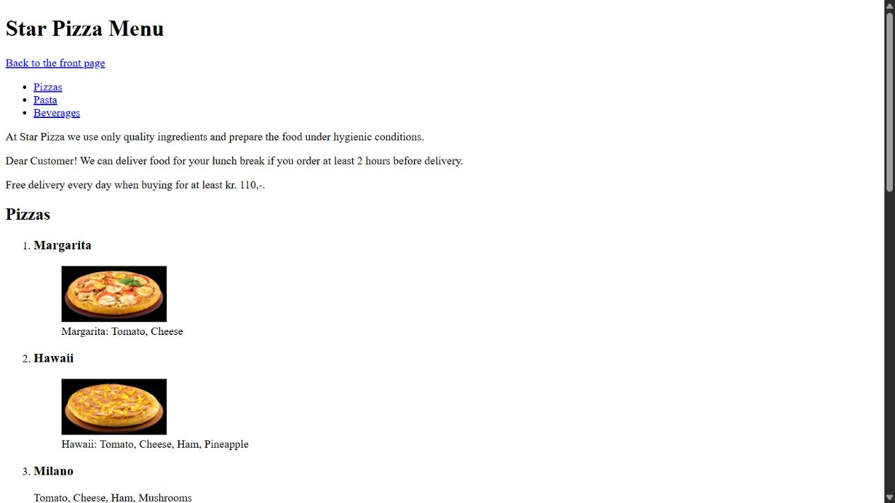
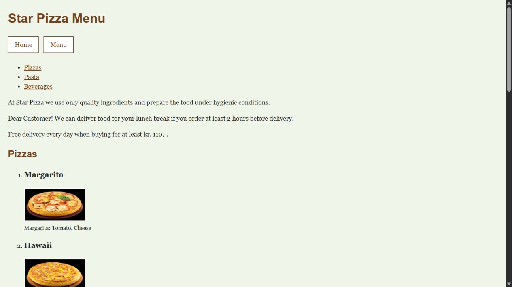
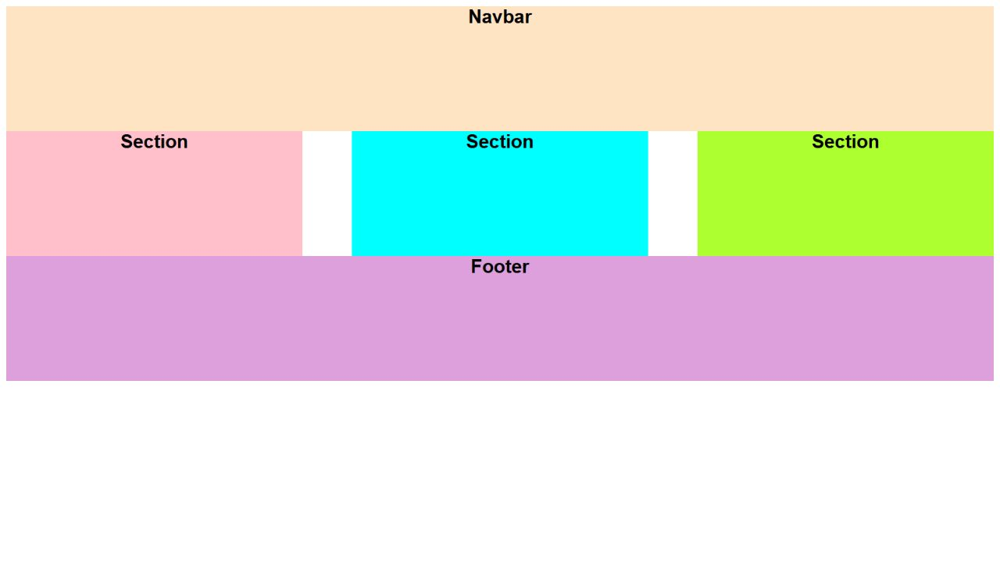
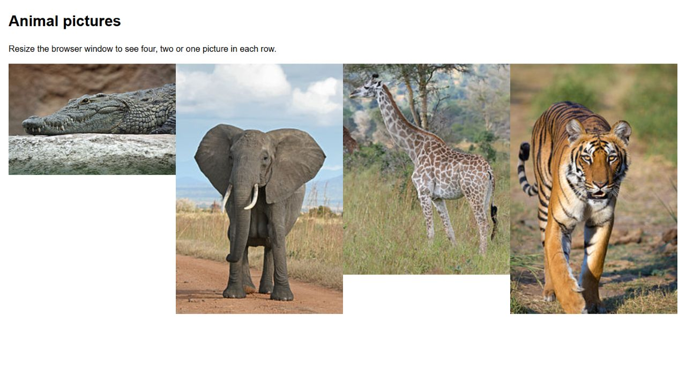
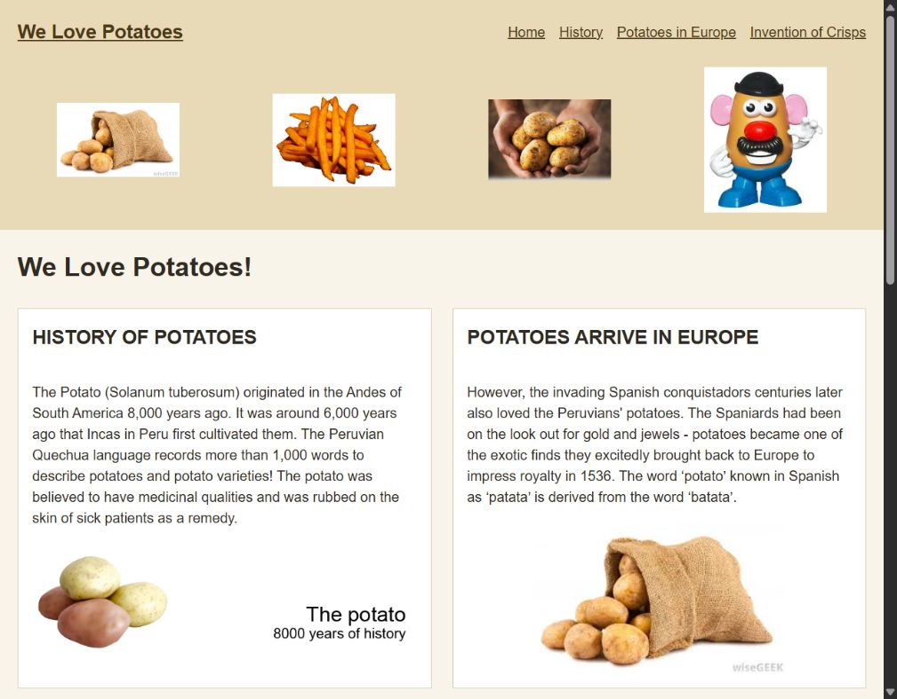

1. Star Pizza - HTML

Two pages with a pizza menu, pictures, opening times and links.
Technologies: HTML
View Star Pizza - HTMLSalvatore Tartaro
These five entries show WEB1 course exercises. Star Pizza is shown at its HTML and CSS stages.

Two pages with a pizza menu, pictures, opening times and links.
Technologies: HTML
View Star Pizza - HTML
Star Pizza with colors, fonts and menu buttons added using CSS.
Technologies: HTML and CSS
View Star Pizza - CSS
Three sections with a header and footer. Everything stacks on small screens.
Technologies: HTML, CSS Grid, and media queries
View Responsive Grid layout
Four animal pictures in four, two or one column, depending on the screen width.
Technologies: HTML, CSS Grid, and media queries
View Responsive animal gallery
A page about potatoes using Grid and Flexbox. It has one column on small screens.
Technologies: HTML, CSS Grid, Flexbox, and media queries
View Potato website